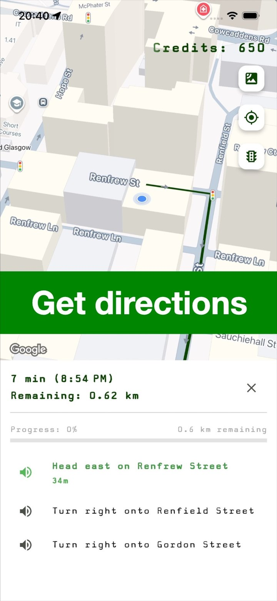
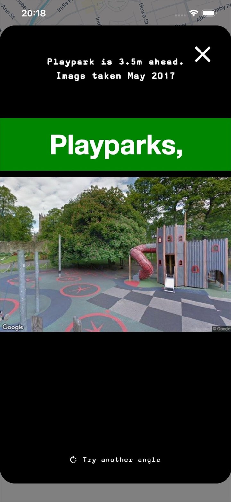

Search near you or anywhere
Use your current location, or search a town, city, postcode or place name. UK and Ireland searches use fast mapped coverage, with worldwide search support using public map data where available.
Search for practical nearby places quickly, whether you are already out or planning ahead.
Use your current location, or search a town, city, postcode or place name. UK and Ireland searches use fast mapped coverage, with worldwide search support using public map data where available.
Find toilets, parking, benches, playparks, fuel, drinking water, chemists, post boxes, bus stops, recycling centres, cash machines and more.
Drinking water, accessible toilets, accessible parking, baby-changing toilets, parent & child parking, hospitals, GPs and defibrillators are fully free with no ads.
See nearby options on the map and expand the search area when you need more results.
Choose a result and get directions using walking, cycling or driving options where available.
Download the app and start searching without creating an account.
Find Nearby uses public map data. If something is missing or wrong, users can help improve the underlying map data so everyone benefits.
Find Nearby is designed for practical moments: finding a useful place, checking what is nearby, then getting directions or previewing the area where available.


Download Find Nearby and search for toilets, parking, benches, playparks and more — with fast mapped coverage across the UK and Ireland and worldwide search support where public map data is available.